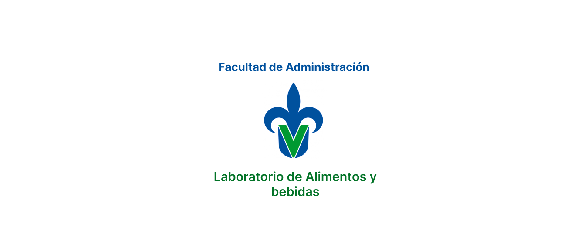

Automatización Laboratorio Alimentos y Bebidas
Encargado del diseño de interfaz para una aplicación destinada a la automatización del Laboratorio en la Facultad de Administración de la Universidad Veracruzana. Optimización de recursos y flujo eficiente.
UX/UIFigmaUCD

ver detalles del proyecto
flujo optimizado ✓